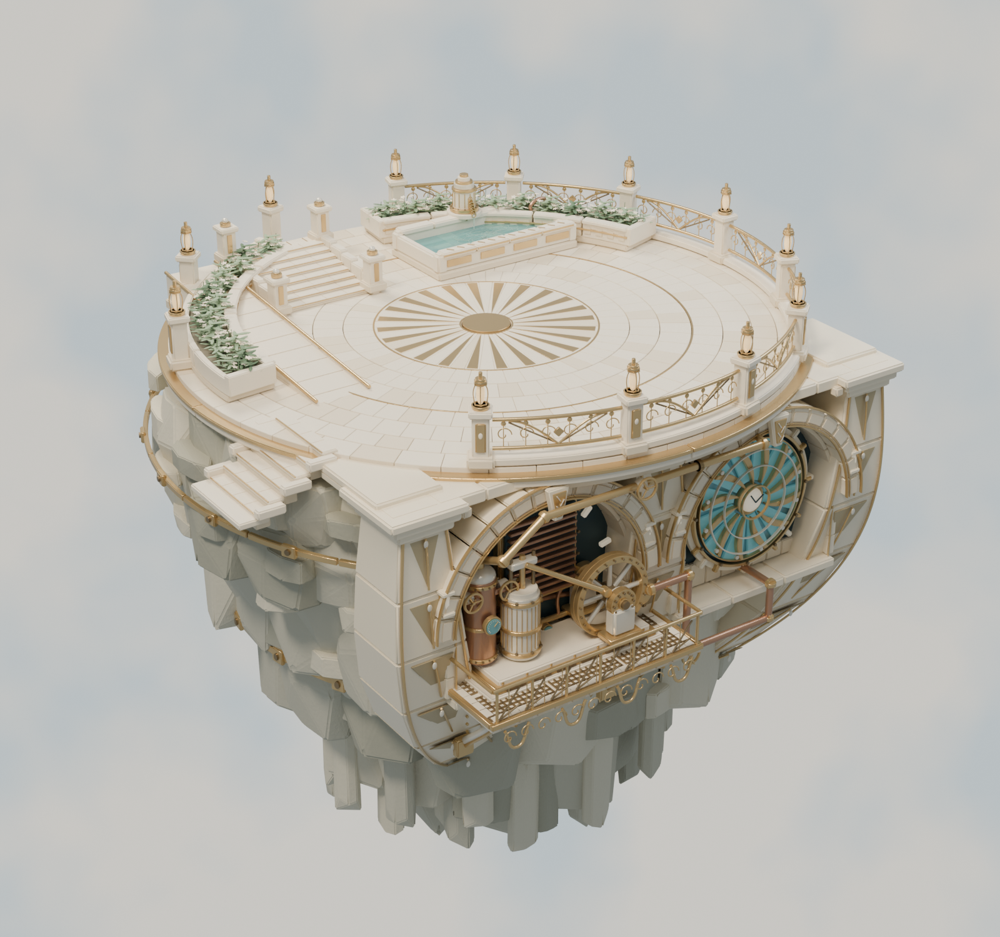
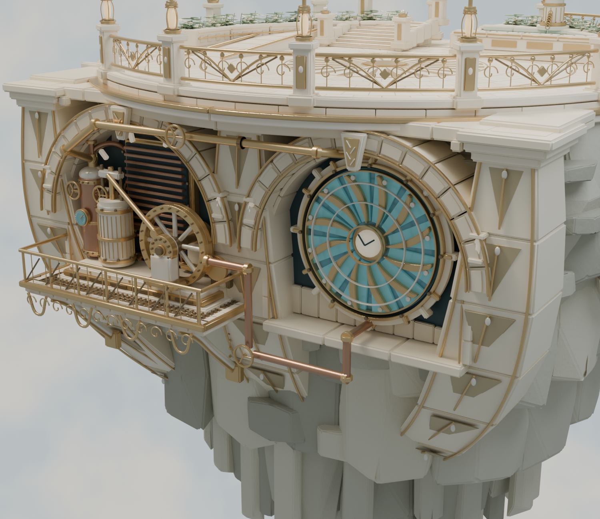

A garden above. An enginehouse within the cliff. Carved supports, recessed machinery and a luminous sun regulator give the terrace a clearer architectural identity.

01 / Same terrace footprint · A new underside silhouette
02 / Curved stone · Warm metal · Opal lightSupports with a destination
Three broad stone ribs curve from deck capitals into embedded rock sockets. The hanging post ends are gone.
Two distinct working bays
A copper workshop and a sun-shaped regulator replace the repeated blank infill walls. Recessed dark surfaces make the depth legible.
A visible mechanical story
Supply and return lines link the existing boiler, the regulator and the condenser. The apparatus suggests a future pressure-and-alignment puzzle.
Separate static art proposal. 470 façade parts redesigned; the other 2,530 objects retain their geometry and transforms. Previous revision and live map are untouched. No engineering certification, simulated steam, implemented puzzle, collision/navigation or game-performance approval is claimed.